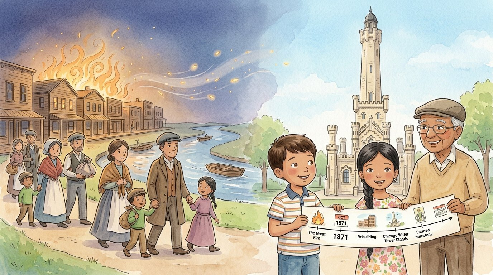

3er grado · Estudios sociales · SS.3.H.1 · SS.3-5.IS.7
El Gran Incendio de Chicago
Un cuento sobre el incendio de 1871 y cómo Chicago se levantó de nuevo.
Palabras de estudios sociales que vas a aprender
Toca una palabra verde para ver qué significa.
El cuento
Un sábado de octubre, el bisabuelo llevó a Israel y a Lucía a la avenida Michigan. Se detuvieron frente a una torre de piedra que parecía un castillo. —Esta es la Torre del Agua —dijo—. Es una de las pocas construcciones que sobrevivieron al Gran Incendio de Chicago.
—El empezó la noche del 8 de octubre de 1871, en un pequeño granero detrás de la casa de la familia O'Leary, en la calle DeKoven. Nadie sabe con seguridad cómo comenzó.
—¿Por qué se hizo tan grande? —preguntó Lucía. —Por varias causas —explicó el bisabuelo—. Ese verano casi no había llovido: hubo una , y todo estaba seco. Además, soplaba un viento muy fuerte, y casi toda la ciudad estaba hecha de : las casas, los techos y hasta las banquetas.
El viento llevaba chispas de un techo a otro. El fuego empezó a hacia el norte y el este. Durante la madrugada del 9 de octubre, las llamas saltaron el río Chicago, quemaron el centro y llegaron hasta la planta del agua. Sin agua, los bomberos casi no podían apagarlo.
Miles de familias huyeron hacia el lago Michigan con lo que podían cargar. Algunas se metieron al agua para protegerse del calor. Por fin, el 10 de octubre empezó a llover, y el fuego se apagó.
—Fue una tragedia —dijo el bisabuelo con voz suave—. Murieron unas 300 personas y se quemaron unos 17,000 edificios. Cerca de 100,000 personas quedaron : se quedaron sin casa. Eso era casi una de cada tres personas de la ciudad.
—Pero Chicago no se rindió —siguió—. Llegó ayuda de muchas ciudades del país y del mundo, y la gente se puso a la ciudad. Esta vez, en el centro, se exigió construir con , piedra y hierro, que no se queman tan fácilmente.
Pocos años después, en Chicago se construyeron algunos de los primeros rascacielos del mundo. Y hoy, en la bandera de la ciudad, una de las cuatro estrellas rojas recuerda el Gran Incendio.
Israel y Lucía hicieron una línea de tiempo: 8 de octubre, empieza el fuego; 9 de octubre, cruza el río y quema el centro; 10 de octubre, llega la lluvia; después, la reconstrucción. —De lo malo, la ciudad aprendió a ser más fuerte —dijo Israel.
Glosario
- incendio
- Un fuego grande que quema lo que no debería quemarse, como casas o bosques.
- sequía
- Un tiempo largo en que casi no llueve y la tierra y las plantas se secan.
- madera
- El material que se saca de los troncos de los árboles. Se quema con facilidad.
- propagarse
- Extenderse o pasar de un lugar a otro, como el fuego de una casa a otra.
- damnificado
- Una persona que perdió su casa o sus cosas por un desastre.
- reconstruir
- Volver a construir lo que se destruyó.
- ladrillo
- Un bloque de barro cocido que se usa para construir paredes. No se quema como la madera.
Preguntas
Elige la respuesta correcta. Si te equivocas, el cuento te muestra dónde está la respuesta.
-
Pregunta A. ¿Cuándo y dónde empezó el Gran Incendio?
El incendio empezó la noche del 8 de octubre de 1871, en un pequeño granero de la calle DeKoven.
-
Pregunta B. ¿Por qué el fuego se hizo tan grande?
Hubo una sequía, soplaba un viento muy fuerte y casi toda la ciudad era de madera.
-
Pregunta C. ¿Por qué los bomberos casi no podían apagar el fuego?
Las llamas llegaron a la planta del agua; sin agua, los bomberos casi no podían apagarlo.
-
Pregunta D. ¿Cuántas personas se quedaron sin casa?
Cerca de 100,000 personas quedaron damnificadas, casi una de cada tres personas de la ciudad.
-
Pregunta E. ¿Cómo se reconstruyó el centro de Chicago?
En el centro se exigió construir con ladrillo, piedra y hierro, que no se queman tan fácilmente.